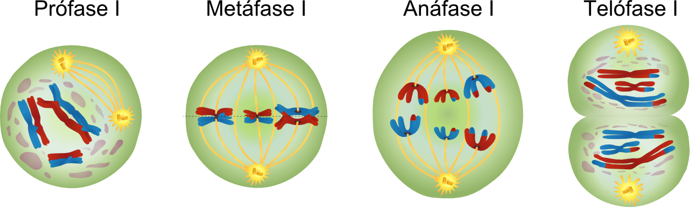
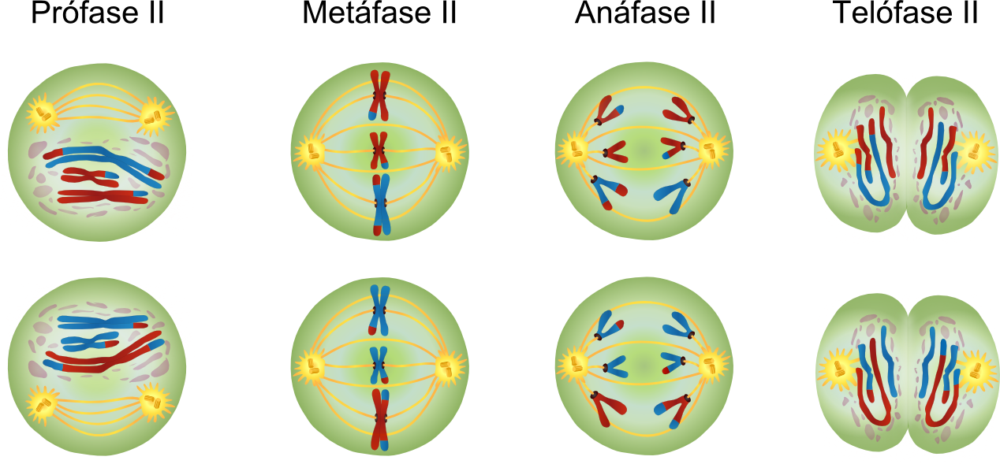

Meiose
É um processo de divisão celular em que uma célula diploide dá origem a quatro células haploides,
sendo através deste processo que se formam os gâmetas.
Contribui para uma grande variabilidade genética para os seres vivos que se reproduzem sexuadamente.
Consiste em duas divisões sucessivas: a divisão I, também chamada meiose I, e a divisão II, também chamada meiose II.
Meiose I
É precedida por uma interfase, durante a qual o DNA se replica, passando cada um dos cromossomas a ter dois cromatídeos.
Durante esta divisão, a célula diploide original, que apresenta ambos os cromossomas homólogos de cada par,
divide-se em duas células haploides, as quais apenas possuem um dos cromossomas de cada par de homólogos.
Pelo facto de ocorrer redução do número de cromossomas, é também designada por divisão reducional.
Esta divisão compreende 4 fazes: a profase I, a metafase I, a anafase I e a telofase I.

Profase I
É a fase mais longa e complexa da meiose, durante a qual os cromossomas começam a condensar-se.
Os cromossomas homólogos emparelham-se num processo denominado sinapse, disignando-se cada par
de cromossomas emparelhados por díadas cromossómicas, bivalentes, ou tétradas cromatídicas.
Os pontos de contacto ao longo dos cromossomas são chamados quiasmas, ou pontos de quiasma e,
nestes pontos, pode ocorrer troca de informação genética num processo denominado recombinação,
ou crossing-over.
Ainda durante esta fase, a membrana nuclear e o núcleolo desorganizam-se, os centríolos, nas células animais,
dividem-se e colocam-se em polos opostos, vindo a formar o fuso acromático, e os cromossomas começam a
deslocar-se para a zona equatorial da célula.
Metafase I
Nesta fase, os cromossomas homólogos dispõem-se aleatoriamente no plano equatorial com os pontos de quiasma no centro do plano,
formando a placa equatorial.
Depois dos cromossomas alinharem-se no plano equatorial, o fuso acromático ligar-se-á ao centrómero de cada cromossoma.
Anafase I
Nesta fase, os cromossomas homólogos separam-se aleatoreamente, por causa do encurtamento do fuso acromático,
afastando-se para polos opostos, sendo este afastamento denominado ascenção polar.
Os dois conjuntos de cromossomas que vão para cada polo são haploides e possuem informações genéticas diferentes,
contribuindo para a variabilidade genética dos núcleos que se formarão.
Telofase I
Nesta fase, os dois conjuntos de cromossomas chegam aos polos da célula e os nucléolos e as membranas nucleares diferenciam-se,
formando dois núcleos haploides.
Normalmente, a citocinese ocorre a seguir a esta fase e a seguir a ela a meiose II ocorre imediatamente,
ou a seguir a uma interfase curta, durante a qual o material genético não se replica.
Meiose II
Nesta divisão ocorre a separação dos cromatídeos irmãos das duas células resultantes da meiose I,
obtendo-se quatro células haploides cujos cromossomas são constituídos por um cromatídeo.
Pelo facto de se manter o número de cromossomas durante esta divisão, é também designada divisão reducional.
Esta divisão compreende 4 fazes: a profase II, a metafase II, a anafase II e a telofase II.

Profase II
Nesta fase, os cromossomas com dois cromatídeos condensam-se e o fuso acromático forma-se a seguir à divisão dos centríolos.
Metafase II
Nesta fase, os cromossomas dispõem-se no plano equatorial da células, formando a placa equatorial,
e o fuso acromático liga-se ao centrómero de cada cromossoma.
Anafase II
Nesta fase, o centrómero divide-se em função do encurtamento do fuso acromático e os cromatídeos irmãos ascendem para
polos opostos, sendo os dois conjuntos de cromossomas com apenas um cromatídeo que acabam de se separar, haploides
Telofase II
Nesta fase, os cromossomas atingem os polos e começam a descondensar.
O fuso acromático desorganiza-se e o nucléolo e a membrana nuclear diferenciam-se.
A seguir a esta fase dá-se a citoconese, havendo a separação do citoplasma de cada uma das células resultantes da divisão I,
resultando em quatro células haploides com um cromatídeo por cromossoma.